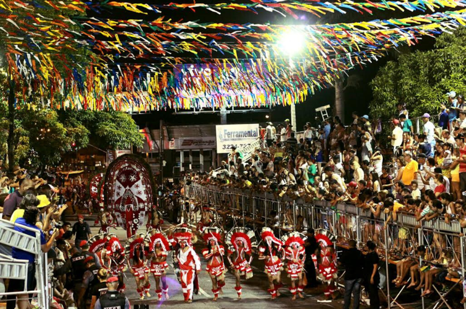
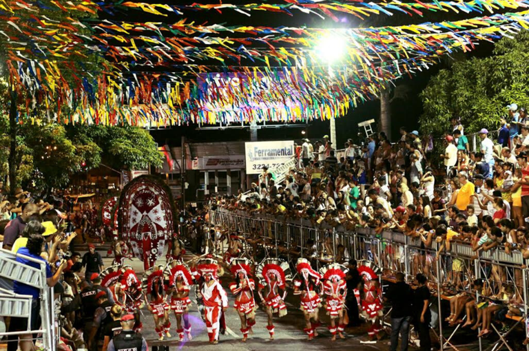

MINHA JOÃO PESSOA
Vem comigo que eu vou te falar
um pouquinho da minha terrinha
População

João Pessoa é uma cidade costeira próxima da foz do rio Paraíba, no leste do Brasil.
A sua cidade velha é conhecida pela arquitetura barroca e art nouveau. A igreja de São Francisco,
do século XVI, tem azulejos portugueses pintados no pátio e uma capela ornamentada com ouro.
As praias de Tambaú e Cabo Branco estão repletas de bares e discotecas, além de lojas que vendem
artesanato local de madeira e cerâmica.
- População metropolitana: 1.290.223
- Fundação: 5 de agosto de 1585
- Área: 211,5 km²
- Elevação: 40 m
- Altitude: 40 m
- Área total: 210,044 km²
GASTRONOMIA
A Paraíba é encantadora e todo mundo sabe. A capital João Pessoa, também.
Desbravar cada cantinho dessa terra é regra para qualquer turista e para quem reside aqui.
Porém, nem só de pontos turísticos se faz esse lugar. A gastronomia local é bastante peculiar
e merece muito ser divulgada e, principalmente, saboreada.
Abaixo dois links dos melhores restaurantes para saborear nossa culinária
PONTOS TURISTICOS


João Pessoa tem as mais belas praias do Brasil e talvez do mundo inteiro.
Acima podemos ver o por do sol na Praia do Jacaré e uma visão panorâmica
dos arrecifes que cercam nossa cidade.
COMEMORAÇÕES TÍPICAS
 

João Pessoa tem muitas festas animadas para nenhum turista ficar dormindo no hotel.
Temos a Festa de Reis – Queimadas (janeiro): Tradicionais festividades com parques
de diversão, barracas de comida e bebida, eventos religiosos e shows culturais.
Carnaval Tradição de João Pessoa (fevereiro): Desfiles diversos na Avenida Duarte da Silveira,
incluindo tribos indígenas e escolas de samba, com premiação e desfile adicional após o carnaval.